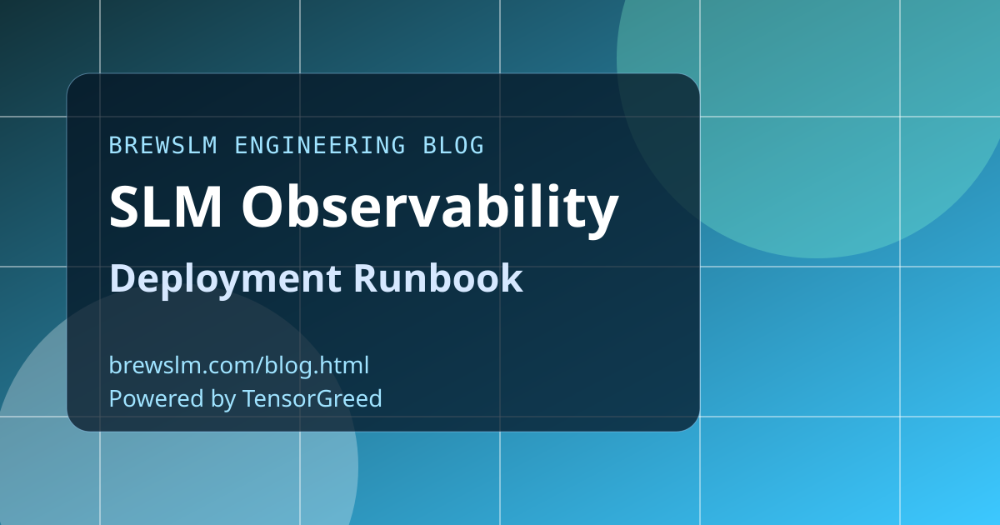

Define required endpoint metrics
Capture throughput, p95 latency, error rates, timeout counts, and queue backlog per deployment target. Include model version tags in every metric stream. Without version-aware metrics, release impact analysis is incomplete.
Standardize logs for debugging and audit
Use structured logs with request IDs, model version, target profile, and gate status fields. Avoid storing sensitive payload content by default and enforce retention policy. Logs should support troubleshooting without creating compliance drift.
Alert on symptoms and causes
Symptom alerts catch user-facing issues quickly, while cause alerts narrow triage scope. Pair both with ownership and escalation routes. Alert quality matters more than alert volume in model-serving environments.
Run post-incident reviews tied to deployment policy
Every incident should feed a concrete improvement in gating, observability, or rollback process. Track these as policy updates, not ad hoc notes. Reliability maturity comes from recurring feedback loops.